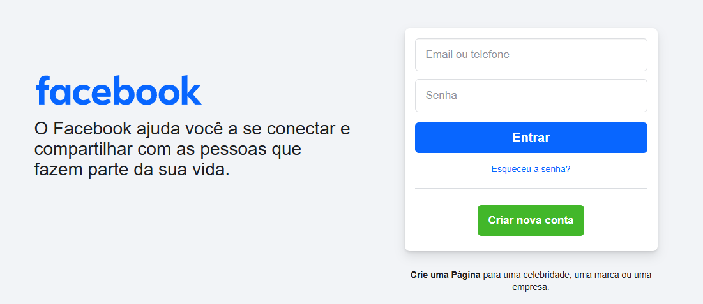

Dicas para Usar Redes Sociais (Facebook e Instagram) com Segurança
Aprenda a criar suas contas no Facebook e Instagram e veja dicas essenciais para proteger suas informações pessoais, ajustar sua privacidade e navegar com mais tranquilidade.
Passo a Passo Completo
O que são Redes Sociais?
Redes sociais são sites e aplicativos que permitem que você se conecte com amigos, familiares e pessoas com interesses em comum. As mais populares são o Facebook e o Instagram. Nelas, você pode compartilhar fotos, vídeos, mensagens e ficar por dentro das novidades.
Criando sua conta no Facebook
Para criar uma conta no Facebook:
- Acesse www.facebook.com ou baixe o aplicativo "Facebook" na loja do seu celular.
- Clique em "Criar nova conta".
- Preencha seu nome, sobrenome, número de celular ou e-mail, crie uma senha, informe sua data de nascimento e gênero.
- Siga as instruções para confirmar seu e-mail ou celular.
Você pode adicionar uma foto de perfil para que seus amigos te reconheçam!
Criando sua conta no Instagram
Para criar uma conta no Instagram:
- Baixe o aplicativo "Instagram" na loja do seu celular.
- Abra o aplicativo e toque em "Cadastre-se com e-mail ou número de telefone" (ou "Criar nova conta"). Você também pode optar por entrar com o Facebook se já tiver uma conta.
- Insira seu e-mail ou telefone, crie um nome de usuário (que será seu @) e uma senha.
- Você pode adicionar seu nome completo e uma foto de perfil.
Dica de Ouro: Senhas Fortes!
Use senhas diferentes para cada rede social. Uma senha forte deve ter letras maiúsculas e minúsculas, números e símbolos (como !, @, #). Evite usar datas de aniversário ou sequências fáceis como "123456". Anote suas senhas em um lugar seguro, longe do computador.
Ajustando sua Privacidade
É muito importante decidir quem pode ver suas publicações e informações. Tanto no Facebook quanto no Instagram, procure por "Configurações" e depois "Privacidade".
- No Facebook: Você pode escolher se suas publicações são vistas por "Amigos", "Público" ou listas personalizadas. Também pode controlar quem pode te enviar solicitações de amizade.
- No Instagram: Você pode tornar sua conta "Privada". Assim, só seguidores aprovados por você poderão ver suas fotos e vídeos.
Explore essas configurações e ajuste conforme sua preferência. Começar com configurações mais restritas é uma boa ideia.
Dicas para Postar com Segurança
Pense bem antes de compartilhar algo. Uma vez na internet, pode ser difícil remover completamente.
- Evite postar informações muito pessoais como seu endereço completo, número de telefone em publicações abertas, ou detalhes sobre sua rotina diária (ex: "estou viajando por 15 dias e minha casa está vazia").
- Cuidado ao marcar sua localização em tempo real, especialmente se estiver sozinho.
- Pergunte antes de postar fotos de outras pessoas. Nem todo mundo gosta de ter sua imagem compartilhada.
Cuidado com Golpes e Perfis Falsos
Infelizmente, existem pessoas mal-intencionadas nas redes sociais. Fique atento:
- Não clique em links suspeitos, mesmo que pareçam vir de amigos (a conta deles pode ter sido invadida).
- Desconfie de mensagens pedindo dinheiro, dados bancários ou senhas. Bancos e empresas sérias não pedem isso por redes sociais.
- Promoções "boas demais para ser verdade" geralmente são golpes.
- Perfis falsos costumam ter poucas fotos, poucos amigos ou seguidores, e fotos que parecem de banco de imagens.
Dica Importante: Autenticação de Dois Fatores
Ative a "Autenticação de Dois Fatores" (ou Verificação em Duas Etapas) nas configurações de segurança. Isso adiciona uma camada extra de proteção: além da senha, você precisará de um código enviado para o seu celular para entrar na sua conta. Dificulta muito a vida de quem tentar invadir seu perfil!
Interagindo com Segurança
- Pense bem antes de aceitar solicitações de amizade (Facebook) ou seguir de volta (Instagram) perfis desconhecidos.
- Se receber mensagens ofensivas ou ameaçadoras, não responda. Use as opções de "Bloquear" e "Denunciar" o perfil para a rede social.
- Não compartilhe informações que possam te comprometer com pessoas que você não conhece bem.
Lembre-se!
As redes sociais podem ser muito divertidas e úteis para manter contato com quem amamos. Usando com cuidado e atenção a essas dicas, sua experiência será muito mais segura e positiva. Em caso de dúvida, peça ajuda a um familiar ou amigo de confiança.